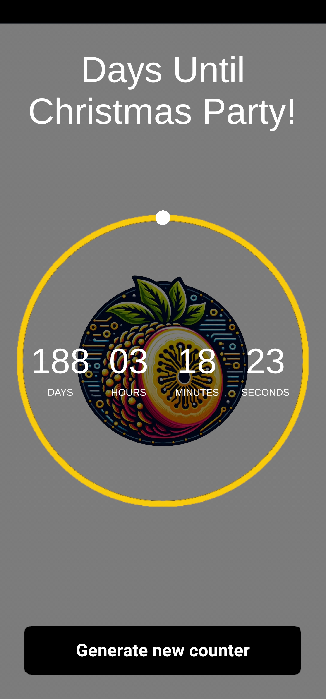

💼 EXPERIENCE
💼 Software Engineer
Yeltic · Full-time
Feb 2025 – Jun 2025 · Remote (Mexico City Metropolitan Area)
Developed interactive applications and modular systems integrated with backend services and external data sources.
- Built interactive applications integrated with REST APIs and external data sources
- Designed modular and decoupled architectures to improve scalability and maintainability
- Integrated applications with databases and dynamic content systems, ensuring data consistency
- Deployed cross-platform applications (including mobile), optimizing performance and usability
- Created test cases based on feature requirements
- Coordinated testing across APIs, data pipelines, and client applications
- Produced technical documentation to support scalability and onboarding
💼 Fullstack Developer
Zuhnlix · Full-time
Sep 2023 – Jan 2025 · Hybrid (San Luis Potosí, Mexico)
Worked on fullstack systems and interactive applications using Unity, connecting backend services, web platforms, and cross-platform deployments.
- Developed backend services using ASP.NET Core, Entity Framework, and SQL
- Built and integrated interactive client modules with REST APIs
- Developed frontend components with React connected to backend services
- Processed and validated structured data for system integrations
- Created test cases for data validation and system reliability
- Performed API and integration testing using Postman and Swagger
- Contributed to system architecture and scalability in agile environments
- Optimized backend queries and application logic for performance
💼 Unity Developer Jr
Fyware · Full-time
Jan 2021 – Aug 2023 · Hybrid (San Luis Potosí, Mexico)
Developed immersive and data-integrated applications for industrial training environments.
- Built interactive 3D/XR applications focused on performance and usability
- Designed systems with gamification mechanics to improve user engagement
- Integrated applications with backend APIs and external data systems
- Monitored and validated data flows across distributed systems
- Implemented test cases to ensure functionality and quality
- Performed cross-device testing for compatibility and performance
- Collaborated with multidisciplinary teams to ensure system stability
PROJECTS
📊 Data - Driven Projects
🎮 Crazy Tap – Interactive Game & Data Analytics System CURRENT PROJECT
End-to-end system combining gameplay, data collection, and analytics to understand player behavior and improve game design decisions.
Problem:
Understanding player behavior in real-time games is challenging without structured data. There was no visibility into performance, difficulty balance, or engagement patterns.
Solution:
- Developed gameplay systems (scoring, combo, difficulty scaling)
- Implemented real-time event tracking and data capture
- Built backend pipeline using PostgreSQL + Supabase
- Designed API layer for data ingestion, validation, and storage
- Structured datasets for analytics and dashboarding in Power BI (in progress)
Analytics Focus:
- Player accuracy (Perfect / Good / Miss)
- Session duration and engagement
- Difficulty progression and drop-off points
- Combo behavior and performance patterns
Impact / Result:
Enabled data-driven analysis of player behavior, supporting decisions around difficulty tuning, engagement optimization, and gameplay balancing.
▶ Play Now
🎮 Interactive Applications
🚜 Forklift Simulation – VR Training System
PCVR training simulation focused on real-time interaction systems and usability in immersive environments.
Problem:
Training in real-world environments is costly and lacks safe repetition for skill development.
Solution:
- Developed VR interaction systems for real-time user input and feedback
- Designed structured user flows for guided training experiences
- Improved interaction consistency across hardware devices
- Tested interaction systems across multiple XR devices
Impact / Result:
Improved usability and interaction reliability in immersive training environments through system refinement and testing.
🚀 Space N Shoot – MonoGame Arcade Shooter Prototype
Arcade shooter prototype focused on game loop design and engine exploration.
Problem:
Need to explore game loop architecture and scalable enemy behavior in arcade-style games.
Solution:
- Built enemy spawning system with progressive difficulty scaling
- Implemented scoring and shooting mechanics
- Designed arcade-style gameplay loop
- Packaged as Windows desktop executable
Impact / Result:
Established a solid foundation for arcade game mechanics and system design using MonoGame.
🌐 Web Construction Visualizer
Browser-based 3D application focused on real-time interaction and performance optimization under WebGL constraints.
Problem:
Delivering real-time 3D interaction in browsers is constrained by performance and memory limitations.
Solution:
- Developed interactive UI systems connected to real-time scene updates
- Optimized performance for browser environments (memory and loading constraints)
- Handled cross-browser compatibility and runtime limitations
- Improved responsiveness of user interactions in 3D environments
Impact / Result:
Delivered a stable and responsive 3D experience in the browser, balancing performance and usability.
🏢 Real Estate Visualization – PCVR Interactive Experience
Immersive VR application for real-time architectural visualization at human scale.
Problem:
Traditional architectural visualization lacks immersion and real-scale spatial understanding.
Solution:
- Developed real-time navigation systems for immersive environments
- Optimized rendering performance for VR hardware constraints
- Improved visual fidelity through lighting and material adjustments
- Designed intuitive interaction and navigation controls
Impact / Result:
Delivered a responsive and immersive visualization experience, balancing performance and visual quality.
⏱️ Countdown Timer – Reusable Time-Based UI Component

Modular time-based UI component for Unity applications.
Problem:
Reusable time-based logic is often tightly coupled and difficult to integrate across projects.
Solution:
- Built configurable timer logic for event scheduling
- Designed reusable UI component with real-time updates
- Synchronized time logic with visual feedback systems
Impact / Result:
Created a modular and reusable component for time-based systems in Unity applications.
▶ Try App
🧪 Testing & System Reliability
- API testing (Postman, Swagger)
- SQL data validation and debugging
- Functional and integration testing
- System reliability and issue diagnosis
📜 Certifications & Credentials
- Unity Certified User – VR Developer
Unity Technologies | 2021 - Unity Certified User – Programmer
Unity Technologies | 2021 - MTA: Database Fundamentals (98-364)
Microsoft / Certiport | 2018 - MTA: Windows Operating System Fundamentals (98-349)
Microsoft / Certiport | 2019 - Microsoft Office Specialist 2013 (PowerPoint, Word, Excel)
Microsoft / Certiport | 2016 - Microsoft Office Specialist 2013 (PowerPoint, Word-Expert, Excel-Expert)Microsoft / Certiport | 2015
- Cambridge English B2
English Proficiency | 2016
📚 Continuous Learning
- Power BI Data Analyst (Udemy - 2026)
Data modeling, DAX, dashboards, ETL processes - Backend .NET Advanced (Udemy - 2025)
REST APIs, architecture, SQL integration, scalable systems - Software Testing (Udemy - 2025)
Test cases, API testing, Cypress basics - Power Apps (Udemy - 2025)
Data validation, low-code apps, automation workflows